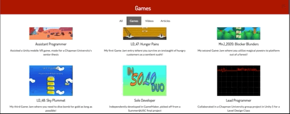
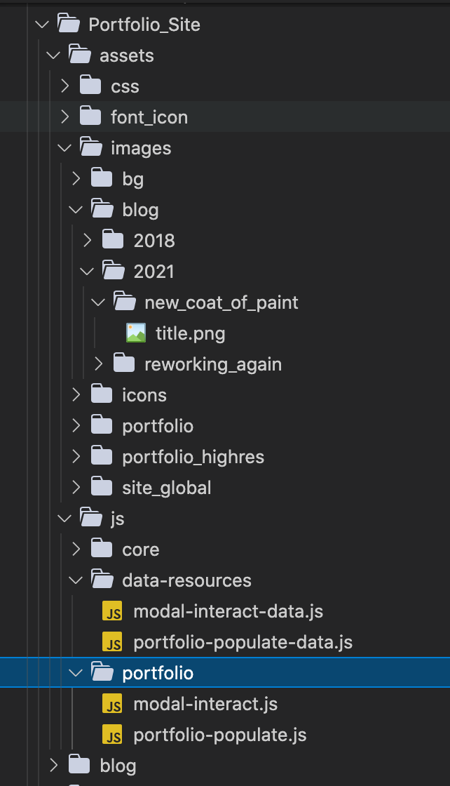
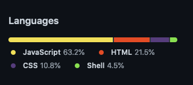

Reworking Again
Published: Sept 08, 2021

Inspired to remodel, thanks to the dozens of passionate folks
When I first completed my initial work on the website, I thought I was in a pretty good spot. All of the new cleanup and fixes made myself pretty content with my site.
Then GDC 2021 happened. Without boring you all with the hard details, I'll just post a link to my Linkedln post on how I felt about attending GDC. In short though, I needed to do some major cleanup. And thus, I got to work on another ambitious project; the Great Reformatting (I made it up on the spot, but it sounds cool).
In total, these are all of the major changes I have done. In order on when I did them:
- Removed all projects that are not relevant to what I am currently doing.
- Edited portfolio module preview to be populated dynamically (sourcing a separate javascript file to populate the contents).
- Renamed and reorganized all of the site assets (images, JS) to be more clear and concise.
- Fixed up some missing images, cleaned up links to be more relevant.
- Resolved 404 page to be resolvable anywhere (woohoo!).
- Added new portfolio items, all of which are recent game jams I partook in!
- A new blog post describing this!

Demonstration of new modal layout, note how it can be scrolled with more images!

Small preview of the new hierarchy.
These changes, while fairly minute, are significant in that they allow myself to properly showcase the work that I really wanted to showcase on my site. For instance, I wanted to talk about the design aspect of each game, since I find those aspects not only insightful for others, but also allows one to peer into my own thinking behind each game. Plus, it also gave me another opportunity to showcase my new modal preview design!
While I cannot say that work will ever truly be done on this site, I found that this step marked a new age of work and contribution to the site. Not only was I able to more easily add content to the portfolio, it allowed me to hone my own programming skills; from creating functional methods to easily parse data to accurately convert html strings to what I wanted. While in the end, all of this could be done in a more advanced framework (i.e. Jekyll), I enjoy seeing how much I can work on my website using the very basic framework and tools given.
A snapshot of what languages make up this site
Now, does that mean this site will never use anything more complex? Of course not! Like how my current gig is about embracing new technologies and tooling, I am only using the tools that I find the most success in my own workflows. Sure, one can jump to the next shiny key in their keyring, but that doesn't always justify the need to keep on changing for the sake of changing. Until there is a drastic need to revamp my website, I will continue on the path of static site hosting via GitHub Pages using a simplistic framework.
So, now you might be asking, Matthew, what else are you going to do now that you're content with the site again? Well, the answer is quite obvious! I currently have a game project that I have stopped temporarily, since I wanted to get a head start on my website edits after viewing GDC. This project, while still a Proof of Concept, is currently at the point where I can jump back into with a goal in mind. That goal being networking and online multiplayer. After that, I can't say what else I have in store for myself, but I will say this: I think it is about time where I start to really pour a lot of soul and love into a real passion game project. Anyway, if you are curious, the GitHub repo for my multiplayer project can be found here .
On the topic of personal projects, what else has been up with me, besides game making? I was experimenting around with a personal VPN travel router, since I wanted to delve a bit into the world of home networking. I recently invested in a Chromcast, so I wanted to mess around with how I can cast media onto my monitor as well as have another solution for traveling securely. Besides that, I am also a proud owner of a new Twitter account! You might have seen it on the footer of the site already. Regardless, I wanted another media outlet to showcase my work and career growth outside of Linkedln, and Twitter seems to be the best platform for that. So come and follow me @maishiroma, if you want to hear me ramble on about my engineering development endeavour as well as video game rants!
And that's it for this update! Of course, if you want to see those new game jam projects I was apart of, come check it out at my home page. I'll be posting more updates to it over time. Until then, stay safe and thanks for reading my latest post! Until next time!